Chapter 11
Alcohols, Phenols and Ethers
Alcohols, Phenols and Ethers

Objectives
After studying this Unit, you will be able to
Alcohols, phenols and ethers are the basic compounds for the formation of detergents, antiseptics and fragrances, respectively.
You have learnt that substitution of one or more hydrogen atom(s) from a hydrocarbon by another atom or a group of atoms result in the formation of an entirely new compound having altogether different properties and applications. Alcohols and phenols are formed when a hydrogen atom in a hydrocarbon, aliphatic and aromatic respectively, is replaced by –OH group. These classes of compounds find wide applications in industry as well as in day-to-day life. For instance, have you ever noticed that ordinary spirit used for polishing wooden furniture is chiefly a compound containing hydroxyl group, ethanol. The sugar we eat, the cotton used for fabrics, the paper we use for writing, are all made up of compounds containing –OH groups. Just think of life without paper; no note-books, books, newspapers, currency notes, cheques, certificates, etc. The magazines carrying beautiful photographs and interesting stories would disappear from our life. It would have been really a different world.
An alcohol contains one or more hydroxyl (OH) group(s) directly attached to carbon atom(s), of an aliphatic system (CH3OH) while a phenol contains –OH group(s) directly attached to carbon atom(s) of an aromatic system (C6H5OH).
The subsitution of a hydrogen atom in a hydrocarbon by an alkoxy or aryloxy group (R–O/Ar–O) yields another class of compounds known as 'ethers', for example, CH3OCH3 (dimethyl ether). You may also visualise ethers as compounds formed by substituting the hydrogen atom of hydroxyl group of an alcohol or phenol by an alkyl or aryl group.
In this unit, we shall discuss the chemistry of three classes of compounds, namely — alcohols, phenols and ethers.
The classification of compounds makes their study systematic and hence simpler. Therefore, let us first learn how are alcohols, phenols and ethers classified?
Alcohols and phenols may be classified as mono–, di–, tri- or polyhydric compounds depending on whether they contain one, two, three or many hydroxyl groups respectively in their structures as given below:

Monohydric alcohols may be further classified according to the hybridisation of the carbon atom to which the hydroxyl group is attached.

Allylic alcohols: In these alcohols, the —OH group is attached to a sp3 hybridised carbon next to the carbon-carbon double bond, that is to an allylic carbon. For example

Benzylic alcohols: In these alcohols, the —OH group is attached to a sp3—hybridised carbon atom next to an aromatic ring. For example

Allylic and benzylic alcohols may be primary, secondary or tertiary.
Vinylic alcohol: CH2 = CH – OH

Ethers are classified as simple or symmetrical, if the alkyl or aryl groups attached to the oxygen atom are the same, and mixed or unsymmetrical, if the two groups are different. Diethyl ether, C2H5OC2H5, is a symmetrical ether whereas C2H5OCH3 and C2H5OC6H5 are unsymmetrical ethers.
Intext Questions
11.1 Classify the following as primary, secondary and tertiary alcohols:
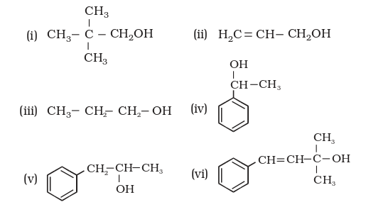
11.2 Identify allylic alcohols in the above examples.
(a) Alcohols: The common name of an alcohol is derived from the common name of the alkyl group and adding the word alcohol to it. For example, CH3OH is methyl alcohol. According to IUPAC system (Unit 12, Class XI), the name of an alcohol is derived from the name of the alkane from which the alcohol is derived, by substituting 'e' of alkane with the suffix 'ol'. The position of substituents are indicated by numerals. For this, the longest carbon chain (parent chain) is numbered starting at the end nearest to the hydroxyl group. The positions of the –OH group and other substituents are indicated by using the numbers of carbon atoms to which these are attached. For naming polyhydric alcohols, the 'e' of alkane is retained and the ending 'ol' is added. The number of –OH groups is indicated by adding the multiplicative prefix, di, tri, etc., before 'ol'. The positions of –OH groups are indicated by appropriate locants e.g., HO–CH2–CH2–OH is named as ethane–1, 2-diol. Table 11.1 gives common and IUPAC names of a few alcohols as examples.
Table 11.1: Common and IUPAC Names of Some Alcohols
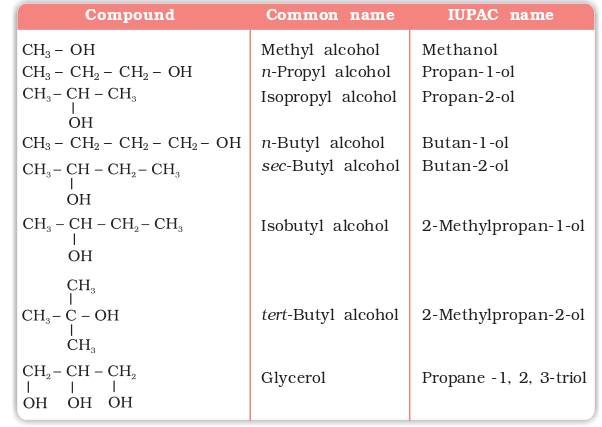
Cyclic alcohols are named using the prefix cyclo and considering the —OH group attached to C–1.

(b) Phenols: The simplest hydroxy derivative of benzene is phenol. It is its common name and also an accepted IUPAC name. As structure of phenol involves a benzene ring, in its substituted compounds the terms ortho (1,2- disubstituted), meta (1,3-disubstituted) and para (1,4-disubstituted) are often used in the common names.
Common name IUPAC name

Dihydroxy derivatives of benzene are known as 1, 2-, 1, 3- and 1, 4-benzenediol.
Common name IUPAC name

(c) Ethers: Common names of ethers are derived from the names of alkyl/ aryl groups written as separate words in alphabetical order and adding the word 'ether' at the end. For example, CH3OC2H5 is ethylmethyl ether.
Table 11.2: Common and IUPAC Names of Some Ethers
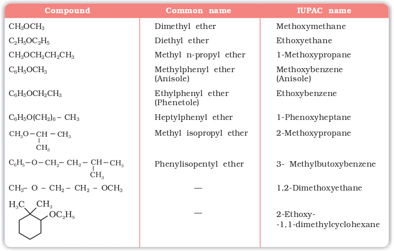
If both the alkyl groups are the same, the prefix 'di' is added before the alkyl group. For example, C2H5OC2H5 is diethyl ether.
Example 11.1
Give IUPAC names of the following compounds:
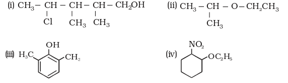
Solution
(i) 4-Chloro-2,3-dimethylpentan-1-ol (ii) 2-Ethoxypropane
(iii) 2,6-Dimethylphenol (iv) 1-Ethoxy-2-nitrocyclohexane
Intext Question
11.3 Name the following compounds according to IUPAC system.

In alcohols, the oxygen of the –OH group is attached to carbon by a sigma (s ) bond formed by the overlap of a sp3 hybridised orbital of carbon with a sp3 hybridised orbital of oxygen. Fig. 11.1 depicts structural aspects of methanol, phenol and methoxymethane.

Fig. 11.1: Structures of methanol, phenol and methoxymethane
The bond angle  in alcohols is slightly less than the tetrahedral angle (109°-28¢). It is due to the repulsion between the unshared electron pairs of oxygen. In phenols, the –OH group is attached to sp2 hybridised carbon of an aromatic ring. The carbon– oxygen bond length (136 pm) in phenol is slightly less than that in methanol. This is due to (i) partial double bond character on account of the conjugation of unshared electron pair of oxygen with the aromatic ring (Section 11.4.4) and
in alcohols is slightly less than the tetrahedral angle (109°-28¢). It is due to the repulsion between the unshared electron pairs of oxygen. In phenols, the –OH group is attached to sp2 hybridised carbon of an aromatic ring. The carbon– oxygen bond length (136 pm) in phenol is slightly less than that in methanol. This is due to (i) partial double bond character on account of the conjugation of unshared electron pair of oxygen with the aromatic ring (Section 11.4.4) and
(ii) sp2 hybridised state of carbon to which oxygen is attached.
Alcohols are prepared by the following methods:
1. From alkenes
(i) By acid catalysed hydration: Alkenes react with water in the presence of acid as catalyst to form alcohols. In case of unsymmetrical alkenes, the addition reaction takes place in accordance with Markovnikov's rule (Unit 13, Class XI).

Mechanism

Hydroboration - oxidation was first reported by H.C. Brown in 1959. For his studies on boron containing organic compounds, Brown shared the 1979 Nobel prize in Chemistry with G. Wittig.
(ii) By hydroboration–oxidation: Diborane (BH3)2 reacts with alkenes to give trialkyl boranes as addition product. This is oxidised to alcohol by hydrogen peroxide in the presence of aqueous sodium hydroxide.

The addition of borane to the double bond takes place in such a manner that the boron atom gets attached to the sp2 carbon carrying greater number of hydrogen atoms. The alcohol so formed looks as if it has been formed by the addition of water to the alkene in a way opposite to the Markovnikov's rule. In this reaction,alcohol is obtained in excellent yield.
2. From carbonyl compounds

The numbers in front of the reagents along the arrow indicate that the second reagent is added only when the reaction with first is complete.
(ii) By reduction of carboxylic acids and esters: Carboxylic acids are reduced to primary alcohols in excellent yields by lithium aluminium hydride, a strong reducing agent.

However, LiAlH4 is an expensive reagent, and therefore, used for preparing special chemicals only. Commercially, acids are reduced to alcohols by converting them to the esters (Section 11.4.4), followed by their reduction using hydrogen in the presence of catalyst (catalytic hydrogenation).

3. From Grignard reagents

The reaction of Grignard reagents with methanal produces a primary alcohol, with other aldehydes, secondary alcohols and with ketones, tertiary alcohols.
The overall reactions using different aldehydes and ketones are as follows:

you will notice that reaction produce a primary alcohol with methanal, a secondary alcohol with other aldehydes and tretiary alcohol with ketones.
Example 11.2
Give the structures and IUPAC names of the products expected from the following reactions:
(a) Catalytic reduction of butanal.
(b) Hydration of propene in the presence of dilute sulphuric acid.
(c) Reaction of propanone with methylmagnesium bromide followed by hydrolysis.
Solution

Phenol, also known as carbolic acid, was first isolated in the early nineteenth century from coal tar. Nowadays, phenol is commercially produced synthetically. In the laboratory, phenols are prepared from benzene derivatives by any of the following methods:
1. From haloarenes

2. From benzenesulphonic acid

3. From diazonium salts
Most of the worldwide production of phenol is from cumene.
4. From cumene
Phenol is manufactured from the hydrocarbon, cumene. Cumene (isopropylbenzene) is oxidised in the presence of air to cumene hydroperoxide. It is converted to phenol and acetone by treating it with dilute acid. Acetone, a by-product of this reaction, is also obtained in large quantities by this method.

Intext Questions
11.4 Show how are the following alcohols prepared by the reaction of a suitable Grignard reagent on methanal ?

11.5 Write structures of the products of the following reactions:

Alcohols and phenols consist of two parts, an alkyl/aryl group and a hydroxyl group. The properties of alcohols and phenols are chiefly due to the hydroxyl group. The nature of alkyl and aryl groups simply modify these properties.
Boiling Points
The –OH group in alcohols and phenols is involved in intermolecular hydrogen bonding as shown below:
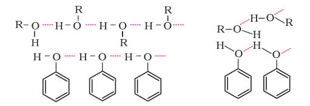
It is interesting to note that boiling points of alcohols and phenols are higher in comparison to other classes of compounds, namely hydrocarbons, ethers, haloalkanes and haloarenes of comparable molecular masses. For example, ethanol and propane have comparable molecular masses but their boiling points differ widely. The boiling point of methoxymethane is intermediate of the two boiling points.

The high boiling points of alcohols are mainly due to the presence of intermolecular hydrogen bonding in them which is lacking in ethers and hydrocarbons.
Solubility
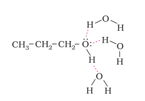
Example 11.3
Arrange the following sets of compounds in order of their increasing boiling points:
(a) Pentan-1-ol, butan-1-ol, butan-2-ol, ethanol, propan-1-ol, methanol.
(b) Pentan-1-ol, n-butane, pentanal, ethoxyethane.
Solution
(a) Methanol, ethanol, propan-1-ol, butan-2-ol, butan-1-ol, pentan-1-ol.
(b) n-Butane, ethoxyethane, pentanal and pentan-1-ol.
Alcohols are versatile compounds. They react both as nucleophiles and electrophiles. The bond between O–H is broken when alcohols react as nucleophiles.
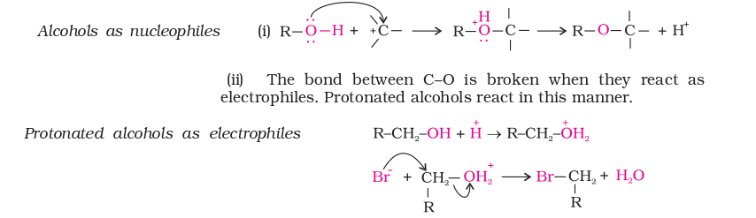
Based on the cleavage of O–H and C–O bonds, the reactions of alcohols and phenols may be divided into two groups:
(a) Reactions involving cleavage of O–H bond
1. Acidity of alcohols and phenols
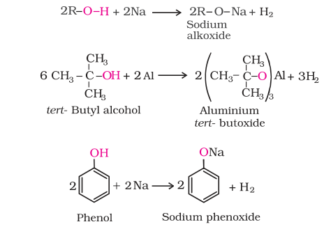
In addition to this, phenols react with aqueous sodium hydroxide to form sodium phenoxides.
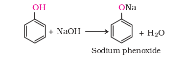
In addition to this, phenols react with aqueous sodium hydroxide to form sodium phenoxides.
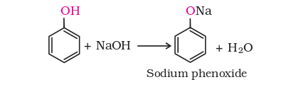
The above reactions show that alcohols and phenols are acidic in nature. In fact, alcohols and phenols are Brönsted acids i.e., they can donate a proton to a stronger base (B:).
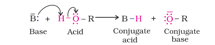
(ii) Acidity of alcohols: The acidic character of alcohols is due to the polar nature of O–H bond. An electron-releasing group (–CH3, –C2H5) increases electron density on oxygen tending to decrease the polarity of O-H bond. This decreases the acid strength. For this reason, the acid strength of alcohols decreases in the following order:

Alcohols are, however, weaker acids than water. This can be illustrated by the reaction of water with an alkoxide.

This reaction shows that water is a better proton donor (i.e., stronger acid) than alcohol. Also, in the above reaction, we note that an alkoxide ion is a better proton acceptor than hydroxide ion, which suggests that alkoxides are stronger bases (sodium ethoxide is a stronger base than sodium hydroxide).
Alcohols act as Bronsted bases as well. It is due to the presence of unshared electron pairs on oxygen, which makes them proton acceptors.
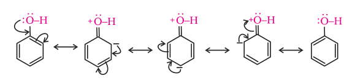
The reaction of phenol with aqueous sodium hydroxide indicates that phenols are stronger acids than alcohols and water. Let us examine how a compound in which hydroxyl group attached to an aromatic ring is more acidic than the one in which hydroxyl group is attached to an alkyl group. The ionisation of an alcohol and a phenol takes place as follows:

Due to the higher electronegativity of sp2 hybridised carbon of phenol to which –OH is attached, electron density decreases on oxygen. This increases the polarity of O–H bond and results in an increase in ionisation of phenols than that of alcohols. Now let us examine the stabilities of alkoxide and phenoxide ions. In alkoxide ion, the negative charge is localised on oxygen while in phenoxide ion, the charge is delocalised. The delocalisation of negative charge (structures I-V) makes phenoxide ion more stable and favours the ionisation of phenol. Although there is also charge delocalisation in phenol, its resonance structures have charge separation due to which the phenol molecule is less stable than phenoxide ion.

In substituted phenols, the presence of electron withdrawing groups such as nitro group, enhances the acidic strength of phenol. This effect is more pronounced when such a group is present at ortho and para positions. It is due to the effective delocalisation of negative charge in phenoxide ion. On the other hand, electron releasing groups, such as alkyl groups, in general, do not favour the formation of phenoxide ion resulting in decrease in acid strength. Cresols, for example, are less acidic than phenol.
The greater the pKa value, the weaker the acid.
Table 11.3: pKa Values of some Phenols and Ethanol
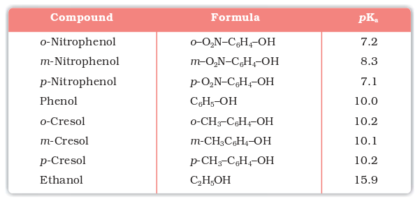
From the above data, you will note that phenol is million times more acidic than ethanol.
Example 11.4
Arrange the following compounds in increasing order of their acid strength: Propan-1-ol, 2,4,6-trinitrophenol, 3-nitrophenol, 3,5-dinitrophenol, phenol, 4-methylphenol.
Solution
Propan-1ol, 4-methyphenol, phenol, 3-ntrophenol, 3, 5-dintrophenol, 2, 4, 6-trinitrophenol.
2. Esterification
Alcohols and phenols react with carboxylic acids, acid chlorides and acid anhydrides to form esters.

Aspirin possesses analgesic, antiinflammatory and antipyretic properties.
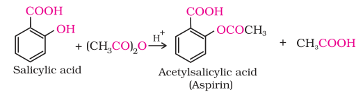
(b) Reactions involving cleavage of carbon – oxygen (C–O) bond in alcohols
1. Reaction with hydrogen halides: Alcohols react with hydrogen halides to form alkyl halides (Refer Unit 10, Class XII).

The difference in reactivity of three classes of alcohols with HCl distinguishes them from one another (Lucas test). Alcohols are soluble in Lucas reagent (conc. HCl and ZnCl2) while their halides are immiscible and produce turbidity in solution. In case of tertiary alcohols, turbidity is produced immediately as they form the halides easily. Primary alcohols do not produce turbidity at room temperature.

Ethanol undergoes dehydration by heating it with concentrated H2SO4 at 443 K.

Secondary and tertiary alcohols are dehydrated under milder conditions. For example

Thus, the relative ease of dehydration of alcohols follows the following order:

The mechanism of dehydration of ethanol involves the following steps:
Tertiary carbocations are more stable and therefore are easier to form than secondary and primary carbocations; tertiary alcohols are the easiest to dehydrate
Mechanism
Step 1: Formation of protonated alcohol.
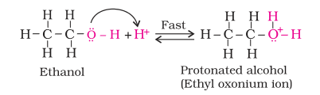
Step 2: Formation of carbocation: It is the slowest step and hence, the rate determining step of the reaction.
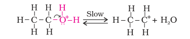
Step 3: Formation of ethene by elimination of a proton.
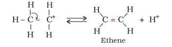
The acid used in step 1 is released in step 3. To drive the equilibrium to the right, ethene is removed as it is formed.
4. Oxidation: Oxidation of alcohols involves the formation of a carbonoxygen double bond with cleavage of an O-H and C-H bonds.

Such a cleavage and formation of bonds occur in oxidation reactions. These are also known as dehydrogenation reactions as these involve loss of dihydrogen from an alcohol molecule. Depending on the oxidising agent used, a primary alcohol is oxidised to an aldehyde which in turn is oxidised to a carboxylic acid.

Strong oxidising agents such as acidified potassium permanganate are used for getting carboxylic acids from alcohols directly. CrO3 in anhydrous medium is used as the oxidising agent for the isolation of aldehydes.

A better reagent for oxidation of primary alcohols to aldehydes in good yield is pyridinium chlorochromate (PCC), a complex of chromium trioxide with pyridine and HCl.

Secondary alcohols are oxidised to ketones by chromic anhyride (CrO3).

Tertiary alcohols do not undergo oxidation reaction. Under strong reaction conditions such as strong oxidising agents (KMnO4) and elevated temperatures, cleavage of various C-C bonds takes place and a mixture of carboxylic acids containing lesser number of carbon atoms is formed.
When the vapours of a primary or a secondary alcohol are passed over heated copper at 573 K, dehydrogenation takes place and an aldehyde or a ketone is formed while tertiary alcohols undergo dehydration.

(c) Reactions of phenols
Following reactions are shown by phenols only.
1. Electrophilic aromatic substitution
Common electrophilic aromatic substitution reactions taking place in phenol are as follows:
(i) Nitration: With dilute nitric acid at low temperature (298 K), phenol yields a mixture of ortho and para nitrophenols.
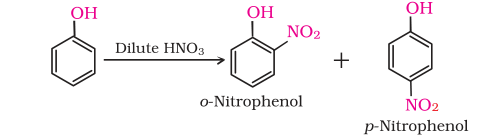
The ortho and para isomers can be separated by steam distillation. o-Nitrophenol is steam volatile due to intramolecular hydrogen bonding while p-nitrophenol is less volatile due to intermolecular hydrogen bonding which causes the association of molecules.
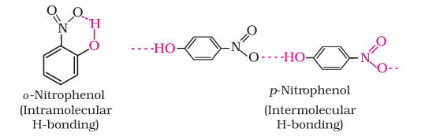
2, 4, 6 - Trinitrophenol is a strong acid due to the presence of three electron withdrawing –NO2 groups which facilitate the release of hydrogen ion.
With concentrated nitric acid, phenol is converted to 2,4,6-trinitrophenol. The product is commonly known as picric acid. The yield of the reaction product is poor.
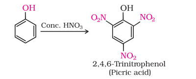
Nowadays picric acid is prepared by treating phenol first with concentrated sulphuric acid which converts it to phenol-2,4-disulphonic acid, and then with concentrated nitric acid to get 2,4,6-trinitrophenol. Can you write the equations of the reactions involved?
(ii) Halogenation: On treating phenol with bromine, different reaction products are formed under different experimental conditions.
(a) When the reaction is carried out in solvents of low polarity such as CHCl3 or CS2 and at low temperature, monobromophenols are formed.

The usual halogenation of benzene takes place in the presence of a Lewis acid, such as FeBr3 (Unit 10, Class XII), which polarises the halogen molecule. In case of phenol, the polarisation of bromine molecule takes place even in the absence of Lewis acid. It is due to the highly activating effect of –OH group attached to the benzene ring.
(b) When phenol is treated with bromine water, 2,4,6-tribromophenol is formed as white precipitate.
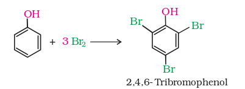
Example 11.5
Write the structures of the major products expected from the following reactions:
(a) Mononitration of 3-methylphenol
(b) Dinitration of 3-methylphenol
(c) Mononitration of phenyl methanoate.
Solution
The combined influence of –OH and –CH3 groups determine the position of the incoming group.
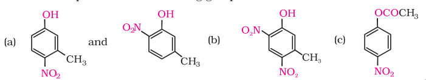
2. Kolbe's reaction
Phenoxide ion generated by treating phenol with sodium hydroxide is even more reactive than phenol towards electrophilic aromatic substitution. Hence, it undergoes electrophilic substitution with carbon dioxide, a weak electrophile. Ortho hydroxybenzoic acid is formed as the main reaction product.

3. Reimer-Tiemann reaction
On treating phenol with chloroform in the presence of sodium hydroxide, a –CHO group is introduced at ortho position of benzene ring. This reaction is known as Reimer - Tiemann reaction.
The intermediate substituted benzal chloride is hydrolysed in the presence of alkali to produce salicylaldehyde.
4. Reaction of phenol with zinc dust
Phenol is converted to benzene on heating with zinc dust.
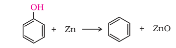
5. Oxidation
Oxidation of phenol with chromic acid produces a conjugated diketone known as benzoquinone. In the presence of air, phenols are slowly oxidised to dark coloured mixtures containing quinones.

Intext Questions
11.6 Give structures of the products you would expect when each of the following alcohol reacts with (a) HCl –ZnCl2 (b) HBr and (c) SOCl2. (i) Butan-1-ol (ii) 2-Methylbutan-2-ol
11.7 Predict the major product of acid catalysed dehydration of (i) 1-methylcyclohexanol and (ii) butan-1-ol
11.8 Ortho and para nitrophenols are more acidic than phenol. Draw the resonance structures of the corresponding phenoxide ions.
11.9 Write the equations involved in the following reactions:
(i) Reimer - Tiemann reaction (ii) Kolbe's reaction
Methanol and ethanol are among the two commercially important alcohols.
1. Methanol

Methanol is a colourless liquid and boils at 337 K. It is highly poisonous in nature. Ingestion of even small quantities of methanol can cause blindness and large quantities causes even death. Methanol is used as a solvent in paints, varnishes and chiefly for making formaldehyde.
2. Ethanol
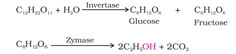
Ingestion of ethanol acts on the central nervous system. In moderate amounts, it affects judgment and lowers inhibitions. Higher concentrations cause nausea and loss of consciousness. Even at higher concentrations, it interferes with spontaneous respiration and can be fatal
In wine making, grapes are the source of sugars and yeast. As grapes ripen, the quantity of sugar increases and yeast grows on the outer skin. When grapes are crushed, sugar and the enzyme come in contact and fermentation starts. Fermentation takes place in anaerobic conditions i.e. in absence of air. Carbon dioxide is released during fermentation.
The action of zymase is inhibited once the percentage of alcohol formed exceeds 14 percent. If air gets into fermentation mixture, the oxygen of air oxidises ethanol to ethanoic acid which in turn destroys the taste of alcoholic drinks.
Nowadays, large quantities of ethanol are obtained by hydration of ethene (Section 11.4).
1. By dehydration of alcohols

Diethyl ether has been used widely as an inhalation anaesthetic. But due to its slow effect and an unpleasant recovery period, it has been replaced, as an anaesthetic, by other compounds.
The formation of ether is a nucleophilic bimolecular reaction (SN2) involving the attack of alcohol molecule on a protonated alcohol, as indicated below:
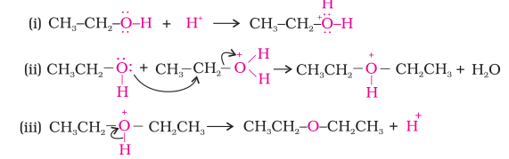
Acidic dehydration of alcohols, to give an alkene is also associated with substitution reaction to give an ether.
Can you explain why is bimolecular dehydration not appropriate for the preparation of ethyl methyl ether?
Alexander William Williamson (1824–1904) was born in London of Scottish parents. In 1849, he became Professor of Chemistry at University College, London.
2. Williamson synthesis
It is an important laboratory method for the preparation of symmetrical and unsymmetrical ethers. In this method, an alkyl halide is allowed to react with sodium alkoxide.

Ethers containing substituted alkyl groups (secondary or tertiary) may also be prepared by this method. The reaction involves SN2 attack of an alkoxide ion on primary alkyl halide.

Better results are obtained if the alkyl halide is primary. In case of secondary and tertiary alkyl halides, elimination competes over substitution. If a tertiary alkyl halide is used, an alkene is the only reaction product and no ether is formed. For example, the reaction of CH3ONa with (CH3)3C–Br gives exclusively 2-methylpropene.
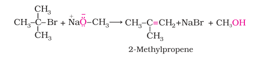
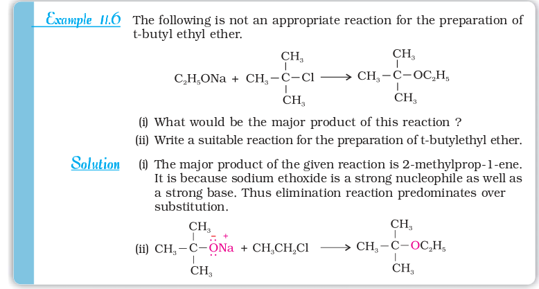
Phenols are also converted to ethers by this method. In this, phenol is used as the phenoxide moiety.

The C-O bonds in ethers are polar and thus, ethers have a net dipole moment. The weak polarity of ethers do not appreciably affect their boiling points which are comparable to those of the alkanes of comparable molecular masses but are much lower than the boiling points of alcohols as shown in the following cases:

The large difference in boiling points of alcohols and ethers is due to the presence of hydrogen bonding in alcohols.

1. Cleavage of C–O bond in ethers
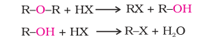
Alkyl aryl ethers are cleaved at the alkyl-oxygen bond due to the more stable aryl-oxygen bond. The reaction yields phenol and alkyl halide.
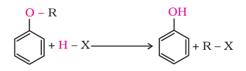
Ethers with two different alkyl groups are also cleaved in the same manner.

The order of reactivity of hydrogen halides is as follows: HI > HBr > HCl. The cleavage of ethers takes place with concentrated HI or HBr at high temperature.
Mechanism
The reaction of an ether with concentrated HI starts with protonation of ether molecule.

Step 1: The reaction takes place with HBr or HI because these reagents are sufficiently acidic.
Step 2:
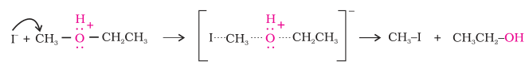
When HI is in excess and the reaction is carried out at high temperature, ethanol reacts with another molecule of HI and is converted to ethyl iodide.
Step 3:
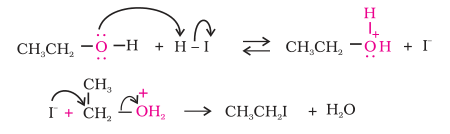
However, when one of the alkyl group is a tertiary group, the halide formed is a tertiary halide.
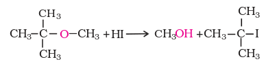
It is because in step 2 of the reaction, the departure of leaving group (HO–CH3) creates a more stable carbocation [(CH3)3C+], and the reaction follows SN1 mechanism.
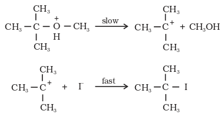
In case of anisole, methylphenyl oxonium ion,  formed by protonation of ether. The bond between O–CH3 is weaker than the bond between O–C6H5 because the carbon of phenyl group is sp2 hybridised and there is a partial double bond character.
formed by protonation of ether. The bond between O–CH3 is weaker than the bond between O–C6H5 because the carbon of phenyl group is sp2 hybridised and there is a partial double bond character.
Therefore the attack by I– ion breaks O–CH3 bond to form CH3I. Phenols do not react further to give halides because the sp2 hybridised carbon of phenol cannot undergo nucleophilic substitution reaction needed for conversion to the halide.
Example 11.7
Give the major products that are formed by heating each of the following ethers with HI.

Solution
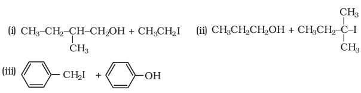
2. Electrophilic substitution
The alkoxy group (-OR) is ortho, para directing and activates the aromatic ring towards electrophilic substitution in the same way as in phenol.
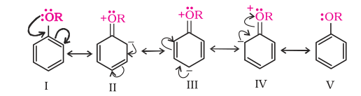
(i) Halogenation: Phenylalkyl ethers undergo usual halogenation in the benzene ring, e.g., anisole undergoes bromination with bromine in ethanoic acid even in the absence of iron (III) bromide catalyst. It is due to the activation of benzene ring by the methoxy group. Para isomer is obtained in 90% yield.

(ii) Friedel-Crafts reaction: Anisole undergoes Friedel-Crafts reaction i.e., the alkyl and acyl groups are introduced at ortho and para positions by reaction with alkyl halide and acyl halide in the presence of anhydrous aluminium chloride (a Lewis acid) as catalyst.
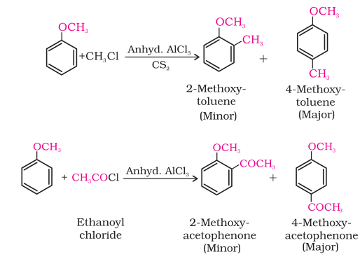
(iii) Nitration: Anisole reacts with a mixture of concentrated sulphuric and nitric acids to yield a mixture of ortho and para nitroanisole.
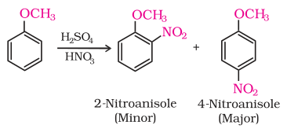
Intext Questions

11.12 Predict the products of the following reactions:

SUMMARY
Alcohols and phenols are classified (i) on the basis of the number of hydroxyl groups and (ii) according to the hybridisation of the carbon atom, sp3 or sp2 to which the –OH group is attached. Ethers are classified on the basis of groups attached to the oxygen atom.
Alcohols are higher boiling than other classes of compounds, namely hydrocarbons, ethers and haloalkanes of comparable molecular masses. The ability of alcohols, phenols and ethers to form intermolecular hydrogen bonding with water makes them soluble in it.
Ethers may be prepared by (i) dehydration of alcohols and (ii) Williamson synthesis. The boiling points of ethers resemble those of alkanes while their solubility is comparable to those of alcohols having same molecular mass. The C–O bond in ethers can be cleaved by hydrogen halides. In electrophilic substitution, the alkoxy group activates the aromatic ring and directs the incoming group to ortho and para positions.
EXERCISES
11.1 Write IUPAC names of the following compounds:
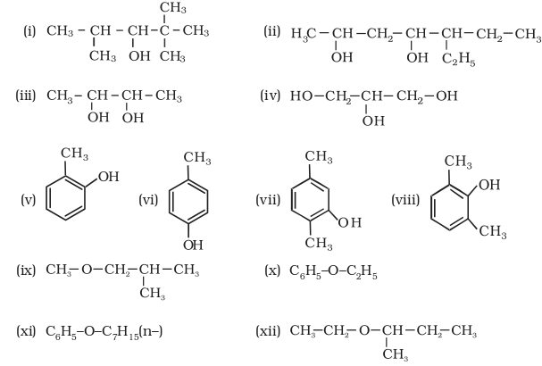
11.2 Write structures of the compounds whose IUPAC names are as follows:
(i) 2-Methylbutan-2-ol (ii) 1-Phenylpropan-2-ol
(iii) 3,5-Dimethylhexane –1, 3, 5-triol (iv) 2,3 – Diethylphenol
(v) 1 – Ethoxypropane (vi) 2-Ethoxy-3-methylpentane
(vii) Cyclohexylmethanol (viii) 3-Cyclohexylpentan-3-ol
(ix) Cyclopent-3-en-1-ol (x) 4-Chloro-3-ethylbutan-1-ol.
11.3 (i) Draw the structures of all isomeric alcohols of molecular formula C5H12O and give their IUPAC names.
(ii) Classify the isomers of alcohols in question 11.3 (i) as primary, secondary and tertiary alcohols.
11.4 Explain why propanol has higher boiling point than that of the hydrocarbon, butane?
11.5 Alcohols are comparatively more soluble in water than hydrocarbons of comparable molecular masses. Explain this fact.
11.6 What is meant by hydroboration-oxidation reaction? Illustrate it with an example.
11.7 Give the structures and IUPAC names of monohydric phenols of molecular formula, C7H8O.
11.8 While separating a mixture of ortho and para nitrophenols by steam distillation, name the isomer which will be steam volatile. Give reason.
11.9 Give the equations of reactions for the preparation of phenol from cumene.
11.10 Write chemical reaction for the preparation of phenol from chlorobenzene.
11.11 Write the mechanism of hydration of ethene to yield ethanol.
11.12 You are given benzene, conc. H2SO4 and NaOH. Write the equations for the preparation of phenol using these reagents.
11.13 Show how will you synthesise:
(i) 1-phenylethanol from a suitable alkene.
(ii) cyclohexylmethanol using an alkyl halide by an SN2 reaction.
(iii) pentan-1-ol using a suitable alkyl halide?
11.14 Give two reactions that show the acidic nature of phenol. Compare acidity of phenol with that of ethanol.
11.15 Explain why is ortho nitrophenol more acidic than ortho methoxyphenol ?
11.16 Explain how does the –OH group attached to a carbon of benzene ring activate it towards electrophilic substitution?
11.17 Give equations of the following reactions:
(i) Oxidation of propan-1-ol with alkaline KMnO4 solution.
(ii) Bromine in CS2 with phenol.
(iii) Dilute HNO3 with phenol.
(iv) Treating phenol wih chloroform in presence of aqueous NaOH.
11.18 Explain the following with an example.
(i) Kolbe's reaction.
(ii) Reimer-Tiemann reaction.
(iii) Williamson ether synthesis.
(iv) Unsymmetrical ether.
11.19 Write the mechanism of acid dehydration of ethanol to yield ethene.
11.20 How are the following conversions carried out?
(i) Propene → Propan-2-ol.
(ii) Benzyl chloride → Benzyl alcohol.
(iii) Ethyl magnesium chloride → Propan-1-ol.
(iv) Methyl magnesium bromide → 2-Methylpropan-2-ol.
11.21 Name the reagents used in the following reactions:
(i) Oxidation of a primary alcohol to carboxylic acid.
(ii) Oxidation of a primary alcohol to aldehyde.
(iii) Bromination of phenol to 2,4,6-tribromophenol.
(iv) Benzyl alcohol to benzoic acid.
(v) Dehydration of propan-2-ol to propene.
(vi) Butan-2-one to butan-2-ol.
11.22 Give reason for the higher boiling point of ethanol in comparison to methoxymethane.
11.23 Give IUPAC names of the following ethers:

11.24 Write the names of reagents and equations for the preparation of the following ethers by Williamson's synthesis:
(i) 1-Propoxypropane (ii) Ethoxybenzene
(iii) 2-Methoxy-2-methylpropane (iv) 1-Methoxyethane
11.25 Illustrate with examples the limitations of Williamson synthesis for the preparation of certain types of ethers.
11.26 How is 1-propoxypropane synthesised from propan-1-ol? Write mechanism of this reaction.
11.27 Preparation of ethers by acid dehydration of secondary or tertiary alcohols is not a suitable method. Give reason.
11.28 Write the equation of the reaction of hydrogen iodide with: (i) 1-propoxypropane (ii) methoxybenzene and (iii) benzyl ethyl ether.
11.29 Explain the fact that in aryl alkyl ethers (i) the alkoxy group activates the benzene ring towards electrophilic substitution and (ii) it directs the incoming substituents to ortho and para positions in benzene ring.
11.30 Write the mechanism of the reaction of HI with methoxymethane.
11.31 Write equations of the following reactions:
(i) Friedel-Crafts reaction – alkylation of anisole.
(ii) Nitration of anisole.
(iii) Bromination of anisole in ethanoic acid medium.
(iv) Friedel-Craft's acetylation of anisole.
11.32 Show how would you synthesise the following alcohols from appropriate alkenes?
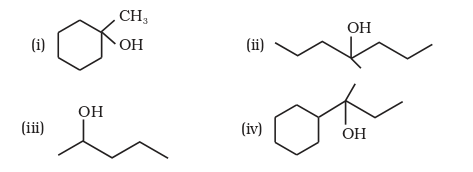
11.33 When 3-methylbutan-2-ol is treated with HBr, the following reaction takes place:

Give a mechanism for this reaction.
(Hint : The secondary carbocation formed in step II rearranges to a more stable tertiary carbocation by a hydride ion shift from 3rd carbon atom.
Answers to Some Intext Questions
11.1 Primary alcohols (i), (ii), (iii)
Secondary alcohols (iv) and (v)
Tertiary alcohols (vi)
11.2 Allylic alcohols (ii) and (vi)
11.3 (i) 3-Chloromethyl-2-isopropylpentan-1-ol
(ii) 2, 5-Dimethylhexane-1,3-diol
(iii) 3-Bromocyclohexanol
(iv) Hex-1-en-3-ol
(v) 2-Bromo-3-methylbut-2-en-1-ol
11.4 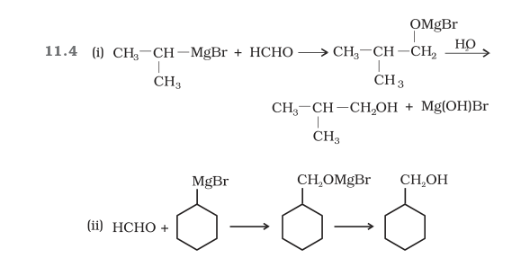
11.5
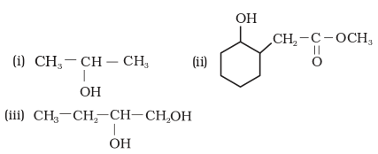
11.7 (i) 1-Methylcyclohexene
(ii) A Mixture of but-1-ene and but-2-ene. But-1-ene is the major product formed due to rearrangement to give secondary carbocation.
11.10 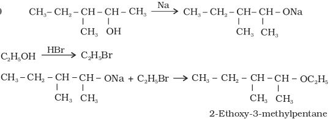
11.11 (ii)
11.12